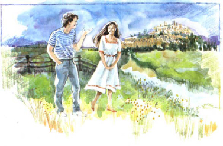
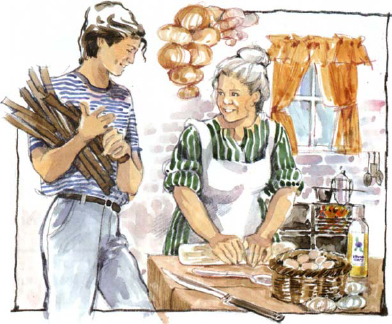
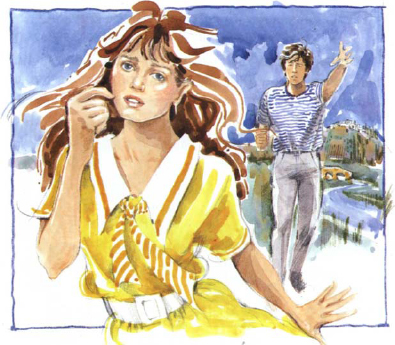
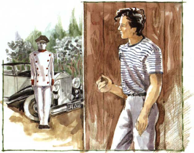
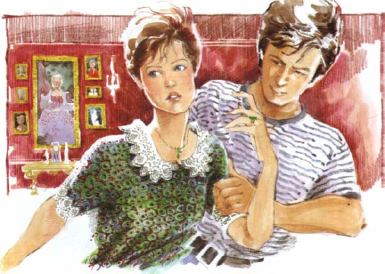
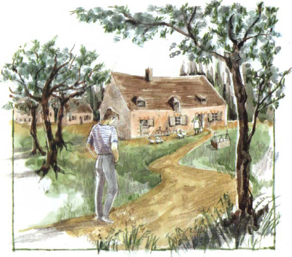

Đó là một buổi chiều hè đẹp trời. Paul rất vui. Không còn phải thi cử nữa. Đã tốt nghiệp đại học. Bây giờ anh cần một công việc. Anh muốn trở thành một nhà văn và làm việc cho một tờ báo. Nhưng trước tiên anh cần nghỉ ngơi.
Trong nhà rất nóng. Không có gió.
Mình sẽ đi dạo, Paul tự nhủ. Mình sẽ xuống sông.
Paul sống tại một thị trấn nhỏ và anh nhanh chóng ra khỏi thị trấn ở vùng ngoại ô. Anh đi bộ gần bờ sông và ngắm nhìn những chú chim nước.
Đột nhiên anh nhìn thấy cô gái. Cô ấy đứng một mình, nhìn xuống nước. Cô ấy trẻ tuổi, và rất đẹp. Cô ấy có mái tóc dài đen, và mặc một chiếc váy trắng xinh đẹp.
Paul đến gần cô ấy.

"Xin chào", anh nói. "Tên bạn là gì?"
"Tôi là Maria", cô ấy nói, và cô ấy mỉm cười với anh ấy.
Paul và Maria nói chuyện rất lâu. Mặt trời đã lặn. Trời gần tối.
"Tôi phải về nhà thôi", Maria nói.
"Bạn sống ở đâu?", Paul hỏi.
"Ở ngôi nhà lớn màu trắng trên đồi", Maria nói. "Bạn sống ở đâu?"
"Ở ngôi nhà màu nâu nhỏ gần chợ", Paul nói.
Họ cùng cười. Nhưng Paul lại buồn. Ngôi nhà trên đồi vừa to vừa quan trọng. Maria giàu có, còn anh thì nghèo. Và Paul đã yêu.
Sau đó, Paul và Maria thường gặp nhau ở gần bờ sông. Maria luôn mặc đồ đẹp. Cô ấy trông luôn xinh đẹp. Paul nghĩ về Maria cả ngày lẫn đêm.
Một buổi tối, Paul nói, "Nghe này Maria, mình đã viết một bài thơ tặng bạn."
Anh lấy một mẩu giấy từ trong túi và đọc bài thơ.
Tôi gặp cô giữa buổi chiều
Bên bờ sông.
Chiếc váy trắng kem
Và mái tóc buộc nơ.
Cô quay lại và mỉm cười với tôi,
Và tôi hỏi cô tên gì.
Mặc dù tôi còn trẻ và nghèo,
Tình yêu của tôi sẽ vẫn thế.
"Bạn tuyệt thật Paul", Maria nói. "Mình yêu bài thơ của bạn."
Paul nắm tay Maria. Anh nhìn vào mắt cô.
"Mình yêu bạn Maria", anh nói. "Bạn có yêu mình không?"
Cô ấy mỉm cười. "Có chứ, tất nhiên mình yêu bạn", cô ấy nói. Cô ấy đứng dậy. "Mình phải về nhà bây giờ."
Paul rất hạnh phúc.
Cô ấy yêu mình! Maria yêu mình, anh ấy nghĩ.
Paul về nhà. Ngôi nhà màu nâu nhỏ vừa hẹp vừa nghèo. Nhưng luôn luôn sạch sẽ và ngăn nắp. Paul sống một mình với mẹ mình. Cha anh ấy đã mất.
Buổi tối hôm ấy, mẹ anh ấy quan sát anh ấy.
"Có chuyện gì vậy Paul?", bà hỏi. "Sao con lại vui thế?"
"Không có gì đâu mẹ", Paul nói.
Mẹ anh ấy mỉm cười. Anh ấy đang yêu, bà nghĩ.

Ngày hôm sau, Paul và Maria lại gặp nhau bên bờ sông. Maria trông buồn buồn, nhưng Paul không nhận thấy điều đó. Anh nắm tay cô ấy.
"Maria", anh nói, "Bây giờ mình nghèo, nhưng một ngày nào đó mình sẽ trở thành một nhà văn nổi tiếng." Maria không nói gì.
"Bạn sẽ lấy mình chứ, Maria? Hãy nói là có đi. Chúng ta sẽ rất hạnh phúc, và ..." anh dừng lại.
Maria nhìn anh một lúc. Mắt cô ấy ngân ngấn nước mắt. Cô ấy lắc đầu. Rồi cô ấy quay ngoắt đi chạy mất.

"Maria!", Paul hét lên. Nhưng Maria đã đi mất.
Paul từ từ về nhà. Anh không hiểu Maria.
Có chuyện gì thế?, anh nghĩ. Cô ấy yêu mình, đúng không?
Mẹ anh đang chờ anh. Bà nhìn thấy khuôn mặt của anh.
Chàng trai đáng thương, bà nghĩ. Cô gái đó không yêu anh ấy.
Paul và mẹ anh ăn tối trong im lặng. Đột nhiên có người gõ cửa. Paul mở cửa. Một người đàn ông mặc đồng phục hầu đứng ở ngoài.
"Tôi từ ngôi nhà trên đồi", anh ta nói. "Cô chủ tôi muốn gặp Paul."
"Là tôi đây", Paul nói.
"Anh có thể đi theo tôi ngay bây giờ không?", anh hầu nói.
"Vâng", Paul nói. Anh rất vui.
Có lẽ Maria đã thay đổi quyết định, anh nghĩ. Có lẽ cô ấy muốn cưới mình.

Mẹ Paul đứng ở cửa ngôi nhà. Bà nhìn Paul và anh hầu.
Ngôi nhà trên đồi, bà tự nhủ. Tôi biết những người đó. Một bà già giàu có, và cô con gái xinh đẹp của bà ấy. Con trai tội nghiệp của tôi!
Ngôi nhà trên đồi không xa. Anh hầu đưa Paul lên những bậc tam cấp rộng và vào trong nhà. Paul rất vui và tim anh đập rất nhanh.
Mọi thứ đều giàu sang và bề thế. Có những tấm thảm, những bức tranh và những tấm gương đẹp.
Paul nhìn mình trong gương. Anh trông thật tệ. Ngôi nhà này sang trọng quá, còn anh thì trông lại rất nghèo.
Anh hầu mở một cánh cửa. Paul bước vào. Một bà lão đang ngồi trên một chiếc ghế lớn. Maria đứng đằng sau bà ta. Bà lão xấu xí. Đôi mắt bà ta nhỏ và lạnh, cái miệng mỏng và cứng. Đôi bàn tay già nua của bà đeo rất nhiều nhẫn. Bà ta trông kiêu hãnh và tức giận.
Paul nhìn bà lão, rồi nhìn Maria. Bà ta thật xấu xí, anh nghĩ. Bà ta có phải là mẹ của Maria không?
"Thế cậu muốn cưới con gái tôi sao?", bà lão nói. Giọng bà ta nghe thật cứng.
Paul dũng cảm nhìn bà ta. "Vâng", anh nói. "Tôi yêu Maria và tôi muốn cưới cô ấy."
Bà lão cười.
"Cậu sao! Một sinh viên nghèo! Không tiền bạc, không cha mẹ, không gì cả! Con gái tôi sẽ không bao giờ lấy cậu."
Paul không nói gì. Anh nhìn Maria. Cô ấy không nhìn anh.
"Bây giờ tôi nghèo", anh nói. "Nhưng một ngày nào đó tôi sẽ trở thành một nhà văn nổi tiếng."
Bà lão lại cười. "Không", bà ta nói. "Con gái tôi không dành cho cậu. Nó sắp kết hôn rồi. Cậu sẽ không bao giờ gặp lại nó nữa."
Bà lão đứng dậy và bỏ ra khỏi phòng.
Chỉ còn Maria và Paul. Paul nhìn Maria, nhưng cô ấy không nhìn anh. Cô ấy đứng im và không nói gì.
Paul đến gần cô ấy và vòng tay ôm cô ấy. Maria tránh xa anh.
"Em xin lỗi, Paul", Maria nói. "Mẹ em nói đúng. Em không thể cưới anh. Em không muốn nghèo. Em muốn có tiền bạc, quần áo và một chiếc ô tô lớn."
"Nhưng em yêu anh mà, Maria", Paul nói. "Và anh cũng yêu em." Anh không hiểu cô ấy. Anh tức giận.
"Đúng, em yêu anh, Paul", Maria nói. "Nhưng tình yêu thôi thì chưa đủ." Cô ấy nhìn anh. Khuôn mặt cô buồn bã.
"Em sẽ kết hôn sau hai tuần nữa", cô ấy nói. "Tạm biệt, Paul. Em xin lỗi."

Paul rời khỏi ngôi nhà lớn và chạy xuống đồi đến bờ sông. Anh ngồi ở đó rất lâu.
Maria yêu mình. Mình biết là cô ấy yêu mình, anh nghĩ. Nhưng cô ấy lại cưới một người đàn ông khác. Cô ấy cưới anh ta vì tiền. Là mẹ cô ấy! Maria sợ bà già xấu xí đó! ôi Maria, Maria, mình phải làm sao đây?
Một lúc lâu sau, Paul về nhà. Có một ngọn đèn ở cửa sổ ngôi nhà nhỏ. Cửa mở. Mẹ anh đang chờ anh. Bà nhìn vào mặt anh, rồi bà ôm choàng lấy anh.
"Họ là những người xấu, con trai của mẹ", bà nói. "Con phải quên cô ta đi."
